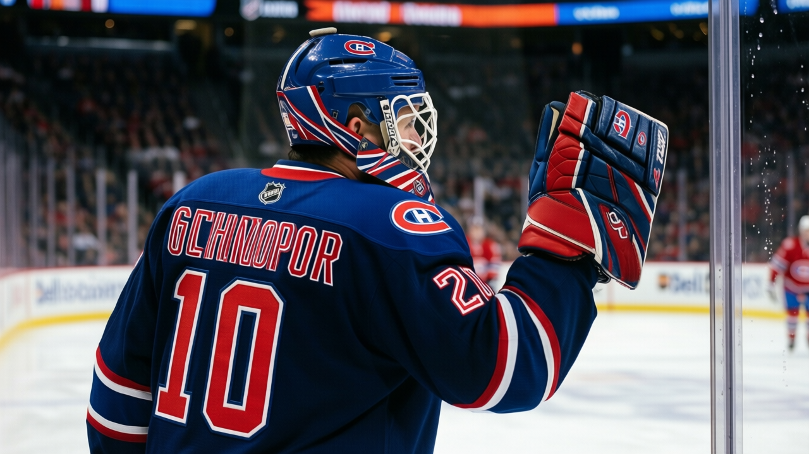

Montreal 1, Boston 5: the Canadiens' season stopped being a slump weeks ago
A 4-goal loss drops Montreal to 23 points, last in the Northeast, on the East's worst road record and with Yanic Perreault out until February
 Luc PelletierMontreal correspondent · Home Ice Network
Luc PelletierMontreal correspondent · Home Ice Network
 Boston Bruins 5,
Boston Bruins 5,  Montreal Canadiens 1 on Friday night, 24 shots to 23, and the box score is the smallest part of the damage. The loss is Montreal's second straight. The Canadiens are 9-16-1, 23 points, last in the Northeast, with Boston and
Montreal Canadiens 1 on Friday night, 24 shots to 23, and the box score is the smallest part of the damage. The loss is Montreal's second straight. The Canadiens are 9-16-1, 23 points, last in the Northeast, with Boston and  Buffalo Sabres at 27.
Buffalo Sabres at 27.
This has stopped looking like a cold patch. Twenty-eight games into the season, Montreal Canadiens have scored 97 goals and allowed 121, the fewest goals for in the division, and  Jose Theodore83 has started 25 of the 28 games, 89% of the schedule, the heaviest workload of any goaltender in the Northeast.
Jose Theodore83 has started 25 of the 28 games, 89% of the schedule, the heaviest workload of any goaltender in the Northeast.
The fixtures add nothing. Boston put five on the Canadiens on Friday and comes to the Bell Centre on Tuesday for the return leg, the kind of game that says more about this team than the standings do. Tuesday opens a four-game week: Ottawa on the road, St. Louis at home, New York on the road. Three of the four opponents sit above the Canadiens in the standings.
The split defines the club. At home Montreal Canadiens are 8-7. Away they are 3-10, the Eastern Conference's worst road record, and two of the four games this week are away from the Bell Centre, in Ottawa and New York.
 Yanic Perreault72 is out with a back injury until 2005-02-03, one of seven spells that have cost the club 116 days this season. His return date sits a long way from a December push.
Yanic Perreault72 is out with a back injury until 2005-02-03, one of seven spells that have cost the club 116 days this season. His return date sits a long way from a December push.
| Northeast | GP | Pts |
|---|---|---|
 Toronto Maple Leafs Toronto Maple Leafs | 29 | 48 |
 Ottawa Senators Ottawa Senators | 26 | 29 |
| Boston Bruins | 28 | 27 |
| Buffalo Sabres | 27 | 27 |
| Montreal Canadiens | 28 | 23 |
None of it is about one night in Boston. The Canadiens have nine wins in 28 games. At 23 points in mid-December, on a 3-10 road record and a four-game week ahead, that is the season.